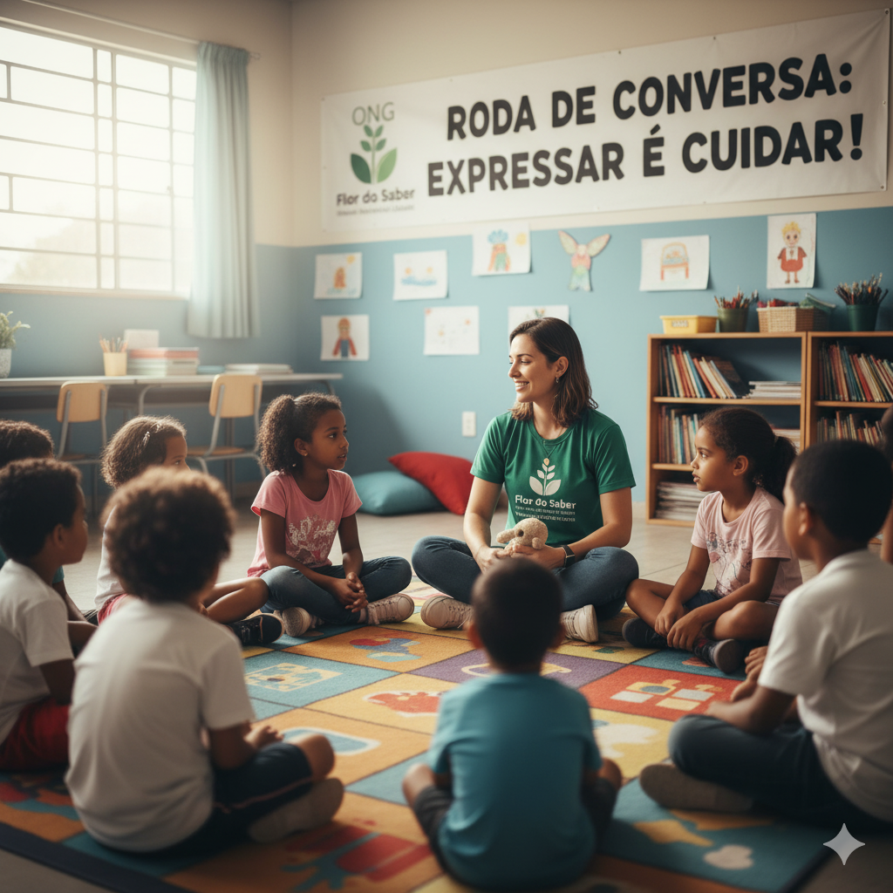
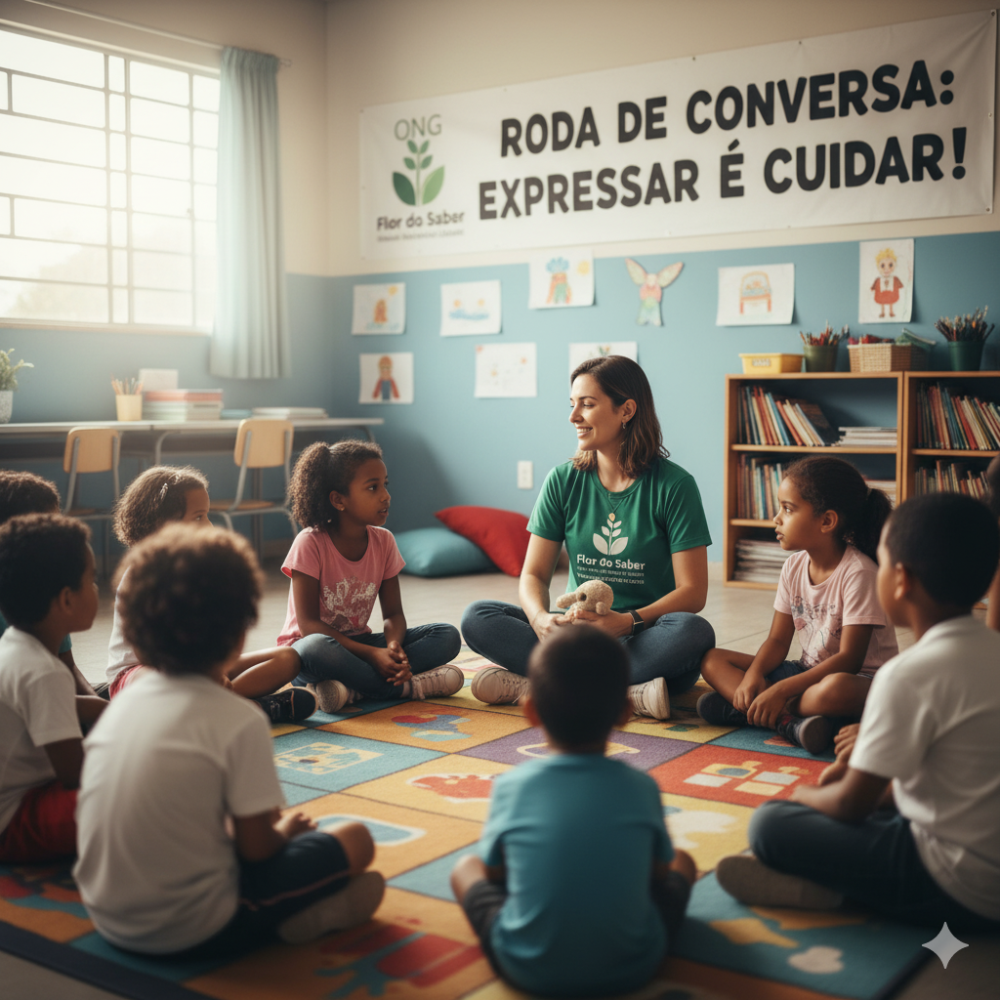

Sobre Nós
üå± Nossa Missão

A ONG Flor do Saber tem como propósito promover o desenvolvimento integral de crianças em situação de vulnerabilidade...
Atuamos com programas de reforço escolar, oficinas culturais, atividades recreativas e apoio familiar...
Nossa missão é também inspirar a comunidade a valorizar a infância e a educação...
üåü Nossa Visão

Ser reconhecida como referência em ações sociais e educativas que impactam positivamente a vida de crianças e famílias...
Almejamos, também, fomentar a participação de voluntários e parceiros que compartilhem dos mesmos valores...
üíö Nossos Valores

- Respeito e empatia: Tratamos cada criança, família e voluntário com atenção e compreensão...
- Inclusão e diversidade: Acreditamos que todas as crianças têm direito às mesmas oportunidades...
- Educação como transformação: Entendemos a educação como um instrumento poderoso...
- Compromisso social: Nossas ações são pautadas na responsabilidade de gerar impacto positivo...
- Transparência e ética: Garantimos clareza e honestidade em todas as nossas atividades...
- Inovação e criatividade: Incentivamos soluções criativas e inovadoras para potencializar nossos projetos...
Galeria de Fotos üì∏


 
